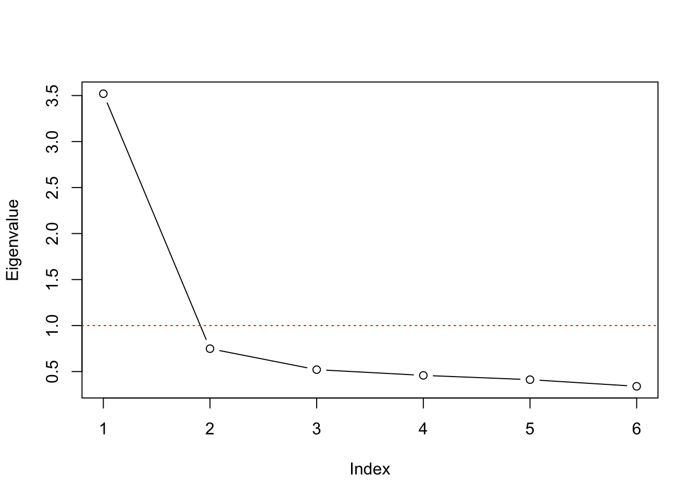
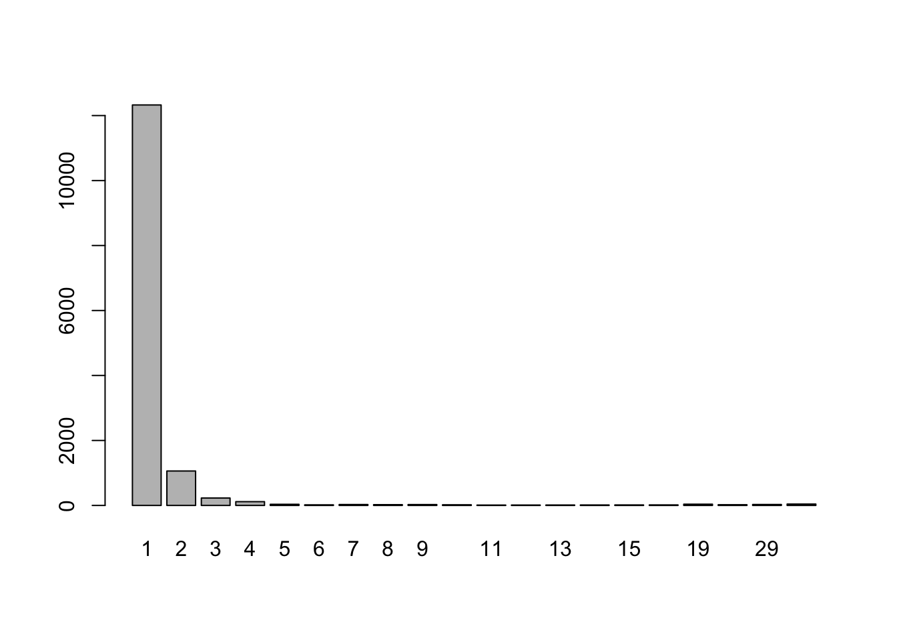

Chapter 2 Factor Analysis
Statistically speaking the main goal of factor analysis is to describe the covariance structure among many variables in terms of a few underlying, but unobservable random quantities, called factors. This usually happens by assuming that the supposed variables can be organized into (contextually meaningful) groups. The variables in a given group are assumed to be highly correlated and thus represent or are related to a latent construct. While the correlation within a group of variables is high, the correlation between different groups should be low. Following that argumentation it may be possible to condense the information from multiple observed variables within a group into a single unobserved factor variable. While Explanatory Factor Analysis (EFA) aims at finding the mentioned groups Confirmatory Factor Analysis (CFA) aims at confirming an a priori hypothesized variable grouping constellation.
While EFA and CFA serve different purposes when doing research, their foundation, especially the model formulation, the estimation and the derivation of quantities of interest is highly comparable and will be presented below.
2.1 Foundations
\[ X_1 - \mu_1 = l_{11} F_1 + l_{12} F_2 + \ldots + l_{1m} F_m + \epsilon_1 \\ X_2 - \mu_2 = l_{21} F_1 + l_{22} F_2 + \ldots + l_{2m} F_m + \epsilon_2 \\ \vdots \\ X_p - \mu_p = l_{p1} F_1 + l_{p2} F_2 + \ldots + l_{pm} F_m + \epsilon_p \] Although the equations above seem to be related to multiple regression equations the fact that all quantities on the right hand side are unobseved (in fact only \(X\) is observed) distinguishes this factor model from regression problems. The factor analysis model can also be written in matrix notation, which allows for easier derivation of some of the following procedures and thus should be considered valuable as well.
\[ \underset{p \times 1}{\boldsymbol X} = \underset{p \times 1}{\boldsymbol \mu} + \underset{p \times m}{\boldsymbol L} \; \underset{m \times p}{\boldsymbol F} + \underset{p \times 1}{\boldsymbol \epsilon} \]
\[ \underset{p \times 1}{\boldsymbol X - \boldsymbol \mu} = \underset{p \times m}{\boldsymbol L} \; \underset{m \times p}{\boldsymbol F} + \underset{p \times 1}{\boldsymbol \epsilon} \]
\[ \boldsymbol \Sigma = Cov(\boldsymbol X) = \underset{\;\\Communality}{\boldsymbol L \boldsymbol L^T} + \underset{\;\\Uniqueness}{\boldsymbol \Psi} \]
2.2 Estimation
Work in Progress …
2.2.1 Principal Component Method
2.2.2 Principal Factor Solution
2.2.3 Maximum Likelihood Estimation
2.3 Rotation
Work in Progress …
2.4 Basic Factor Analysis in R
In R there are multiple implementations of factor analysis available. Each model variant and each implementation comes with its own strengths and drawbacks. A good starting point is the factanal() function that comes with the preinstalled stats package. However, more elaborate and flexible approaches are available for download (e.g. in the psych package). In this part we are focusing on the the factor analysis procedure that is implemented in the factanal() function, which performs maximum-likelihood factor analysis on a covariance, correlation or data matrix. For using factanal() four arguments are essential x to input the data, factors to specify the number of factors that should be used, scores to specify the method used to calculate the factor scores and rotation to specify the method for orthogonal or oblique rotation.
factanal(x, # Data
factors, # Number of factors
scores, # Method to calculate factor scores
rotation) # Method for rotationWhile x and factors must be specified by the user the arguments scores and rotation use default values. Factor scores could be calculated either using Thompsons method (scores = "regression"), based on Bartlett’s weighted least-squares approach (scores = "Bartlett") or not calculated at all (defaul: scores = "none"). Applying factor rotation can either be done using the default Varimax option (rotation = "varimax") for orthogonal transformation or using rotation = "Bartlett" for an oblique transformation. Alternatively results can be obtained without applying a transformation using rotation = "none".
2.4.1 Data Preparation and Description
Lets get our hands dirty and apply what we learned. The following code loads some data that results from a questionnaire with 50 questions.
q <- readRDS("data/fa_questions.rds") # Questions asked
d <- readRDS("data/fa_sample.rds") # Response dataThe variable q contains the questions from the questionnaire (50 items) while d contains the actual responses. Respondents hat the option to answer each question using a 5-point Likert-Scale, that was labeled 1=Disagree, 3=Neutral, 5=Agree. However, the data is not pre-processed and needs to be thoroughly investigated and potentially cleaned up before it can be used for analytic procedures.
## Q coding question
## 1 Q01 P I feel comfortable around people.
## 2 Q02 P I have excellent ideas.
## 3 Q03 N I insult people.
## 4 Q04 P I am the life of the party.
## 5 Q05 N I do not have a good imagination.
## 6 Q06 P I sympathize with others' feelings.The object q contains three variables (columns), the question ID Q, an indication if the question is positively (coding == "P") or negatively (coding == "N") formulated and the actual formulation of the item question. The responses are saved in object d.
## Q04 Q39 Q01 Q34 Q23 Q43 Q14 Q18 Q33 Q21 Q41 Q10 Q07 Q09 Q15 Q40 Q25 Q47 Q12
## 1 2 3 3 3 3 3 4 3 3 4 4 2 5 2 4 4 4 4 4
## 2 4 2 3 3 4 2 4 2 4 4 3 4 5 3 4 4 3 4 4
## 3 3 4 4 3 3 2 3 3 3 3 2 4 4 3 2 3 3 3 4
## 4 1 3 3 2 4 2 2 2 5 3 2 2 5 1 4 3 5 4 4
## 5 1 5 1 2 2 1 3 2 4 5 4 2 5 3 3 4 4 3 4
## 6 1 5 4 5 3 2 1 5 2 5 3 3 5 1 4 3 4 4 2
## Q36 Q48 Q20 Q03 Q06 Q49 Q26 Q27 Q31 Q29 Q22 Q32 Q24 Q08 Q35 Q37 Q38 Q45 Q19
## 1 5 2 4 1 4 2 4 2 3 4 4 4 3 4 3 3 4 4 2
## 2 3 5 4 3 4 2 4 2 4 4 3 4 5 4 4 2 5 1 3
## 3 3 1 4 2 4 3 3 2 4 3 3 2 2 4 2 4 3 3 2
## 4 4 2 4 2 4 1 5 2 4 4 4 4 1 4 1 4 1 4 2
## 5 3 4 4 3 4 2 5 2 4 5 3 5 2 5 1 4 1 4 4
## 6 4 1 4 2 5 2 5 3 4 4 3 2 4 4 3 3 2 4 2
## Q42 Q46 Q28 Q13 Q44 Q16 Q02 Q05 Q11 Q50 Q17 Q30 IPC testelapse country
## 1 4 4 4 2 5 2 4 2 4 5 4 4 1 97 DE
## 2 2 3 4 3 4 2 3 4 3 4 4 4 1 162 DE
## 3 3 4 5 1 4 2 4 2 4 2 4 4 1 428 DE
## 4 4 4 5 1 5 1 4 2 5 5 5 3 1 156 DE
## 5 5 5 4 1 5 1 5 1 5 5 3 5 2 221 DE
## 6 3 3 5 2 3 3 3 3 5 5 4 4 1 140 DE## [1] 14095 53In total we have 14095 observations and 53 variables in the dataframe. The first 50 columns represent the responses to the items introduced above. The remaining three variables (IPC, testelapse, country) provide metadata and some technical information, which can be used to perform plausibility checks and cleanup the data.
IPC: Is an abbreviation for IP (Internet Protocol Adress) Count and lists the number of records from the user’s IP address in the dataset. For max cleanliness is is recommended to only use records where this value is 1. It should, however, be noted that high values can have multiple causes and do no necessarily represent abusive usage of the survey service. They can be because of shared networks (e.g. entire universities) or multiple submissions.testelapse: Is the time in seconds spent on the page with the survey questions.country: Indicates the country of the responded, but is determined by technical information and was not asked as a question.
50 Items - Click to expand!
## [1] 1.4513333 -0.8950159 -0.8152918 -0.2511007 -0.72939532.4.2 Selecting numbers of Factors
# Calculate Correlation Matrix, Eigenvalues & Proportion of Variance
R <- cor(d_small)
eigval <- eigen(R)$values
proptotvar <- eigval / sum(eigval)# Screeplot
plot(eigval, type = "b", ylab = "Eigenvalue", xlab="Index", xaxt="n")
axis(1, at=1:length(eigval))
abline(h=1, lty = "dotted", col="red")
df <- data.frame(Eigenvalue = eigval,
Var=proptotvar,
sumVar=cumsum(proptotvar))
knitr::kable(df, digits=4, booktabs=T)| Eigenvalue | Var | sumVar |
|---|---|---|
| 3.5200 | 0.5867 | 0.5867 |
| 0.7488 | 0.1248 | 0.7115 |
| 0.5207 | 0.0868 | 0.7983 |
| 0.4586 | 0.0764 | 0.8747 |
| 0.4120 | 0.0687 | 0.9434 |
| 0.3399 | 0.0566 | 1.0000 |
2.4.3 Applying Factor Analysis
fa_none <- factanal(d_small , factors = 2, rotation = "none")
fa_varimax <- factanal(d_small , factors = 2, rotation = "varimax")
fa_promax <- factanal(d_small, factors = 2, rotation = "promax")par(mfrow = c(1,3))
plot(fa_none$loadings[,1],
fa_none$loadings[,2],
xlab = "Factor 1",
ylab = "Factor 2",
ylim = c(-1,1),
xlim = c(-1,1),
main = "No rotation")
abline(h = 0, v = 0, col="darkgrey")
plot(fa_varimax$loadings[,1],
fa_varimax$loadings[,2],
xlab = "Factor 1",
ylab = "Factor 2",
ylim = c(-1,1),
xlim = c(-1,1),
main = "Varimax rotation")
text(fa_varimax$loadings[,1]-0.08,
fa_varimax$loadings[,2]+0.08,
colnames(d_small),
col="blue")
abline(h = 0, v = 0, col="darkgrey")
plot(fa_promax$loadings[,1],
fa_promax$loadings[,2],
xlab = "Factor 1",
ylab = "Factor 2",
ylim = c(-1,1),
xlim = c(-1,1),
main = "Promax rotation")
abline(h = 0, v = 0, col="darkgrey")